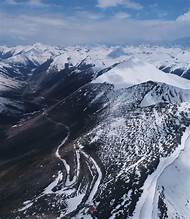
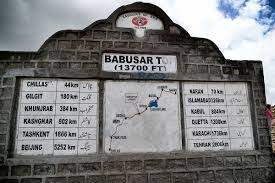

Babusar Top
The highest point of the Kaghan Valley, offering breathtaking views of northern Pakistan.
The highest point of the Kaghan Valley, offering breathtaking views of northern Pakistan.
Babusar Top, located at an elevation of 4,173 meters (13,691 feet), is the highest point of the Kaghan Valley in Khyber Pakhtunkhwa. It connects the Kaghan Valley with Chilas in Gilgit-Baltistan through the Babusar Pass.
The pass is surrounded by snowcapped peaks, lush meadows, and glaciers, making it one of the most scenic routes in northern Pakistan. During the summer months, it serves as a popular destination for tourists and adventurers.
From Babusar Top, visitors can witness majestic landscapes including snow-covered mountains, alpine meadows, and glacial streams. The weather is extremely cold, even in summer, and strong winds often sweep across the pass.
A stone monument marks the highest point of the pass, where many tourists stop for photography and sightseeing. On clear days, the mighty Nanga Parbat (the ninth highest mountain in the world) is visible from the top.
